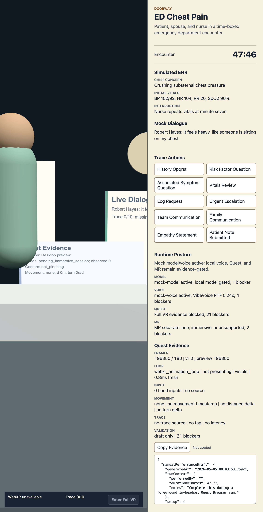

Virtual patient core
Scenario banks, actor state, patient notes, review governance, and model routing are built as testable contracts before any runtime is treated as clinically ready.
Open clinical simulation infrastructure
Evidence-gated XR clinical training for browser and Quest workflows, with local-first voice, virtual-patient state, and production asset readiness tracked as explicit proof lanes.

Headset evidence remains claim-scoped until foreground frame pacing is captured.
Moshi, Qwen-TTS, Bun, and Python proxy evidence stay separated from production claims.
Contract fixtures are useful, but artifact-backed character and equipment proof is still gated.
What it is
Scenario banks, actor state, patient notes, review governance, and model routing are built as testable contracts before any runtime is treated as clinically ready.
WebXR and IWSDK sidecars capture browser, Quest, controller input, visual QA, and mixed reality evidence without blurring prototype behavior into production promises.
Local model caches, Qwen-TTS, Moshi package evidence, API websocket transport, and live-dialog benchmarks are verified independently and kept offline by default.
Evidence gates
Current posture
OpenClinXR is early-stage infrastructure, not a clinical product. The repo favors permissive runtime licensing, local/offline development evidence, and explicit blockers for physical Quest performance, production-grade generated assets, clinical validation, safety, and governance review.